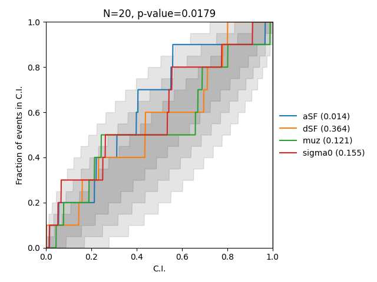

PP test#
import random
from compas_surrogate.pp_test import PPresults, PPrunner
H5 = "det_matrix.h5"
random.seed(1)
def run_analyses_and_make_pp_plot(outdir, h5, n_training, n_injections):
runner = PPrunner(
outdir=outdir,
det_matricies_fname=h5,
n_training=n_training,
n_injections=n_injections,
sampler='dynesty'
)
runner.generate_injection_file(n=n_injections)
runner.run()
pp_results = PPresults.from_results(f"{outdir}/out*/*.json")
pp_results.plot(f"{outdir}/pp_plot.png")
if __name__ == "__main__":
for n_train in [500]:
run_analyses_and_make_pp_plot(
outdir=f"out_pp_ntrain_{n_train}",
h5=H5,
n_training=n_train,
n_injections=10,
)
|COMPAS-SUR|24/08 13:35:46|INFO| Running inference for 10 injections
|COMPAS-SUR|24/08 13:35:46|INFO| Loading cache from out_pp_ntrain_500/out_inj_884/cache_lnl.npz
|COMPAS-SUR|24/08 13:35:49|INFO| Loading model from out_pp_ntrain_500/out_inj_884/model
|COMPAS-SUR|24/08 13:35:49|SUCCESS| Trained and saved Model
|COMPAS-SUR|24/08 13:35:49|INFO| Setting up sampler
WARNING: Skipping /usr/local/lib/python3.11/site-packages/numpy-1.25.2-py3.11.egg-info due to invalid metadata entry 'name'
WARNING: Skipping /usr/local/lib/python3.11/site-packages/numpy-1.25.2-py3.11.egg-info due to invalid metadata entry 'name'
WARNING: Skipping /usr/local/lib/python3.11/site-packages/numpy-1.25.2-py3.11.egg-info due to invalid metadata entry 'name'
/Users/avaj0001/Documents/projects/compas_dev/compas_ml_surrogate/compas_surrogate/plotting/image_utils.py:19: DeprecationWarning: ANTIALIAS is deprecated and will be removed in Pillow 10 (2023-07-01). Use LANCZOS or Resampling.LANCZOS instead.
return img.resize((proportional_width, height), Image.ANTIALIAS)
|COMPAS-SUR|24/08 13:37:26|INFO| Inference Summary:
median maxlnl inj
aSF 0.01 0.01 0.01
dSF 4.76^{+0.34}_{-0.3} 4.50 4.42
muz -0.32^{+0.02}_{-0.02} -0.32 -0.33
sigma0 0.44^{+0.1}_{-0.09} 0.43 0.25
lnl - -111.87 -114.10
|COMPAS-SUR|24/08 13:37:26|INFO| Loading cache from out_pp_ntrain_500/out_inj_8058/cache_lnl.npz
/Users/avaj0001/Documents/projects/compas_dev/compas_ml_surrogate/compas_surrogate/plotting/image_utils.py:19: DeprecationWarning: ANTIALIAS is deprecated and will be removed in Pillow 10 (2023-07-01). Use LANCZOS or Resampling.LANCZOS instead.
return img.resize((proportional_width, height), Image.ANTIALIAS)
|COMPAS-SUR|24/08 13:37:28|INFO| Loading model from out_pp_ntrain_500/out_inj_8058/model
|COMPAS-SUR|24/08 13:37:28|SUCCESS| Trained and saved Model
|COMPAS-SUR|24/08 13:37:28|INFO| Setting up sampler
/usr/local/lib/python3.11/site-packages/bilby/core/utils/log.py:73: DeprecationWarning: Accessing attr.__version__ is deprecated and will be removed in a future release. Use importlib.metadata directly to query for attrs's packaging metadata.
vdict[key] = str(getattr(sys.modules[key], "__version__", "N/A"))
WARNING: Skipping /usr/local/lib/python3.11/site-packages/numpy-1.25.2-py3.11.egg-info due to invalid metadata entry 'name'
WARNING: Skipping /usr/local/lib/python3.11/site-packages/numpy-1.25.2-py3.11.egg-info due to invalid metadata entry 'name'
WARNING: Skipping /usr/local/lib/python3.11/site-packages/numpy-1.25.2-py3.11.egg-info due to invalid metadata entry 'name'
/Users/avaj0001/Documents/projects/compas_dev/compas_ml_surrogate/compas_surrogate/plotting/image_utils.py:19: DeprecationWarning: ANTIALIAS is deprecated and will be removed in Pillow 10 (2023-07-01). Use LANCZOS or Resampling.LANCZOS instead.
return img.resize((proportional_width, height), Image.ANTIALIAS)
|COMPAS-SUR|24/08 13:38:43|INFO| Inference Summary:
median maxlnl inj
aSF 0.01 0.01 0.01
dSF 4.81^{+0.39}_{-0.27} 4.83 5.05
muz -0.18^{+0.29}_{-0.04} -0.17 -0.17
sigma0 0.4^{+0.16}_{-0.14} 0.34 0.41
lnl - -20.00 -20.38
|COMPAS-SUR|24/08 13:38:43|INFO| Loading cache from out_pp_ntrain_500/out_inj_5002/cache_lnl.npz
/Users/avaj0001/Documents/projects/compas_dev/compas_ml_surrogate/compas_surrogate/plotting/image_utils.py:19: DeprecationWarning: ANTIALIAS is deprecated and will be removed in Pillow 10 (2023-07-01). Use LANCZOS or Resampling.LANCZOS instead.
return img.resize((proportional_width, height), Image.ANTIALIAS)
|COMPAS-SUR|24/08 13:38:45|INFO| Loading model from out_pp_ntrain_500/out_inj_5002/model
|COMPAS-SUR|24/08 13:38:45|SUCCESS| Trained and saved Model
|COMPAS-SUR|24/08 13:38:45|INFO| Setting up sampler
/usr/local/lib/python3.11/site-packages/bilby/core/utils/log.py:73: DeprecationWarning: Accessing attr.__version__ is deprecated and will be removed in a future release. Use importlib.metadata directly to query for attrs's packaging metadata.
vdict[key] = str(getattr(sys.modules[key], "__version__", "N/A"))
WARNING: Skipping /usr/local/lib/python3.11/site-packages/numpy-1.25.2-py3.11.egg-info due to invalid metadata entry 'name'
WARNING: Skipping /usr/local/lib/python3.11/site-packages/numpy-1.25.2-py3.11.egg-info due to invalid metadata entry 'name'
WARNING: Skipping /usr/local/lib/python3.11/site-packages/numpy-1.25.2-py3.11.egg-info due to invalid metadata entry 'name'
/Users/avaj0001/Documents/projects/compas_dev/compas_ml_surrogate/compas_surrogate/plotting/image_utils.py:19: DeprecationWarning: ANTIALIAS is deprecated and will be removed in Pillow 10 (2023-07-01). Use LANCZOS or Resampling.LANCZOS instead.
return img.resize((proportional_width, height), Image.ANTIALIAS)
|COMPAS-SUR|24/08 13:40:01|INFO| Inference Summary:
median maxlnl inj
aSF 0.01 0.01 0.01
dSF 4.71^{+0.33}_{-0.33} 4.49 4.37
muz -0.08^{+0.06}_{-0.05} -0.35 -0.35
sigma0 0.34^{+0.18}_{-0.16} 0.33 0.36
lnl - -197.67 -197.82
|COMPAS-SUR|24/08 13:40:01|INFO| Loading cache from out_pp_ntrain_500/out_inj_6115/cache_lnl.npz
/Users/avaj0001/Documents/projects/compas_dev/compas_ml_surrogate/compas_surrogate/plotting/image_utils.py:19: DeprecationWarning: ANTIALIAS is deprecated and will be removed in Pillow 10 (2023-07-01). Use LANCZOS or Resampling.LANCZOS instead.
return img.resize((proportional_width, height), Image.ANTIALIAS)
|COMPAS-SUR|24/08 13:40:02|INFO| Loading model from out_pp_ntrain_500/out_inj_6115/model
|COMPAS-SUR|24/08 13:40:02|SUCCESS| Trained and saved Model
|COMPAS-SUR|24/08 13:40:02|INFO| Setting up sampler
/usr/local/lib/python3.11/site-packages/bilby/core/utils/log.py:73: DeprecationWarning: Accessing attr.__version__ is deprecated and will be removed in a future release. Use importlib.metadata directly to query for attrs's packaging metadata.
vdict[key] = str(getattr(sys.modules[key], "__version__", "N/A"))
WARNING: Skipping /usr/local/lib/python3.11/site-packages/numpy-1.25.2-py3.11.egg-info due to invalid metadata entry 'name'
WARNING: Skipping /usr/local/lib/python3.11/site-packages/numpy-1.25.2-py3.11.egg-info due to invalid metadata entry 'name'
WARNING: Skipping /usr/local/lib/python3.11/site-packages/numpy-1.25.2-py3.11.egg-info due to invalid metadata entry 'name'
/Users/avaj0001/Documents/projects/compas_dev/compas_ml_surrogate/compas_surrogate/plotting/image_utils.py:19: DeprecationWarning: ANTIALIAS is deprecated and will be removed in Pillow 10 (2023-07-01). Use LANCZOS or Resampling.LANCZOS instead.
return img.resize((proportional_width, height), Image.ANTIALIAS)
|COMPAS-SUR|24/08 13:41:08|INFO| Inference Summary:
median maxlnl inj
aSF 0.01 0.01 0.01
dSF 4.7^{+0.36}_{-0.34} 5.19 4.99
muz -0.33^{+0.27}_{-0.12} -0.21 -0.22
sigma0 0.34^{+0.18}_{-0.17} 0.12 0.12
lnl - -40.66 -41.99
|COMPAS-SUR|24/08 13:41:08|INFO| Progress: 70%
|COMPAS-SUR|24/08 13:41:09|INFO| Generating cache out_pp_ntrain_500/out_inj_7689/cache_lnl.npz using det_matrix.h5 and universe 7689:MockPopulation(<Universe: [11735 systems], SF=0.007,2.770,2.900,4.394, muz=-1.30e-01, sigma0=5.56e-01>)
|COMPAS-SUR|24/08 13:41:09|INFO| Starting LnL computation for 10667 universes
|COMPAS-SUR|24/08 13:41:19|INFO| Keeping 10504/10667 likelihoods (dropping nans/inf).
|COMPAS-SUR|24/08 13:41:19|SUCCESS| Saved out_pp_ntrain_500/out_inj_7689/cache_lnl.npz
/Users/avaj0001/Documents/projects/compas_dev/compas_ml_surrogate/compas_surrogate/plotting/image_utils.py:19: DeprecationWarning: ANTIALIAS is deprecated and will be removed in Pillow 10 (2023-07-01). Use LANCZOS or Resampling.LANCZOS instead.
return img.resize((proportional_width, height), Image.ANTIALIAS)
|COMPAS-SUR|24/08 13:41:21|INFO| Training model out_pp_ntrain_500/out_inj_7689/model: IN[(500, 4)]--> OUT[(500, 1)]
|COMPAS-SUR|24/08 13:41:21|INFO| Training surrogate In((400, 4))-->Out((400, 1)) [testing:100]
/Users/avaj0001/Documents/projects/compas_dev/compas_ml_surrogate/compas_surrogate/plotting/image_utils.py:19: DeprecationWarning: ANTIALIAS is deprecated and will be removed in Pillow 10 (2023-07-01). Use LANCZOS or Resampling.LANCZOS instead.
return img.resize((proportional_width, height), Image.ANTIALIAS)
|COMPAS-SUR|24/08 13:41:29|INFO| Surrogate metrics: {'train': MAE: 0.71, MSE: 0.9, R2: 0.0, 'test': MAE: 0.73, MSE: 0.99, R2: -0.0}
|COMPAS-SUR|24/08 13:41:29|INFO| ✔✔✔ True LnL: -25.92, Surrogate LnL: -25.92 +/- 0.20 ✔✔✔
|COMPAS-SUR|24/08 13:41:29|SUCCESS| Trained and saved Model
|COMPAS-SUR|24/08 13:41:29|INFO| Setting up sampler
/usr/local/lib/python3.11/site-packages/bilby/core/utils/log.py:73: DeprecationWarning: Accessing attr.__version__ is deprecated and will be removed in a future release. Use importlib.metadata directly to query for attrs's packaging metadata.
vdict[key] = str(getattr(sys.modules[key], "__version__", "N/A"))
WARNING: Skipping /usr/local/lib/python3.11/site-packages/numpy-1.25.2-py3.11.egg-info due to invalid metadata entry 'name'
WARNING: Skipping /usr/local/lib/python3.11/site-packages/numpy-1.25.2-py3.11.egg-info due to invalid metadata entry 'name'
WARNING: Skipping /usr/local/lib/python3.11/site-packages/numpy-1.25.2-py3.11.egg-info due to invalid metadata entry 'name'
/Users/avaj0001/Documents/projects/compas_dev/compas_ml_surrogate/compas_surrogate/plotting/image_utils.py:19: DeprecationWarning: ANTIALIAS is deprecated and will be removed in Pillow 10 (2023-07-01). Use LANCZOS or Resampling.LANCZOS instead.
return img.resize((proportional_width, height), Image.ANTIALIAS)
|COMPAS-SUR|24/08 13:42:40|INFO| Inference Summary:
median maxlnl inj
aSF 0.01 0.01 0.01
dSF 4.63^{+0.38}_{-0.3} 4.21 4.39
muz -0.41^{+0.28}_{-0.07} -0.12 -0.13
sigma0 0.4^{+0.21}_{-0.13} 0.49 0.56
lnl - -25.40 -25.92
|COMPAS-SUR|24/08 13:42:40|INFO| Generating cache out_pp_ntrain_500/out_inj_9741/cache_lnl.npz using det_matrix.h5 and universe 9741:MockPopulation(<Universe: [11735 systems], SF=0.014,2.770,2.900,4.203, muz=-1.38e-01, sigma0=5.62e-01>)
|COMPAS-SUR|24/08 13:42:40|INFO| Starting LnL computation for 10667 universes
|COMPAS-SUR|24/08 13:42:51|INFO| Keeping 10291/10667 likelihoods (dropping nans/inf).
|COMPAS-SUR|24/08 13:42:51|SUCCESS| Saved out_pp_ntrain_500/out_inj_9741/cache_lnl.npz
/Users/avaj0001/Documents/projects/compas_dev/compas_ml_surrogate/compas_surrogate/plotting/image_utils.py:19: DeprecationWarning: ANTIALIAS is deprecated and will be removed in Pillow 10 (2023-07-01). Use LANCZOS or Resampling.LANCZOS instead.
return img.resize((proportional_width, height), Image.ANTIALIAS)
|COMPAS-SUR|24/08 13:42:52|INFO| Training model out_pp_ntrain_500/out_inj_9741/model: IN[(500, 4)]--> OUT[(500, 1)]
|COMPAS-SUR|24/08 13:42:52|INFO| Training surrogate In((400, 4))-->Out((400, 1)) [testing:100]
/Users/avaj0001/Documents/projects/compas_dev/compas_ml_surrogate/compas_surrogate/plotting/image_utils.py:19: DeprecationWarning: ANTIALIAS is deprecated and will be removed in Pillow 10 (2023-07-01). Use LANCZOS or Resampling.LANCZOS instead.
return img.resize((proportional_width, height), Image.ANTIALIAS)
|COMPAS-SUR|24/08 13:42:59|INFO| Surrogate metrics: {'train': MAE: 1.09, MSE: 1.99, R2: -0.0, 'test': MAE: 1.07, MSE: 1.8, R2: -0.0}
|COMPAS-SUR|24/08 13:42:59|INFO| ✔✔✔ True LnL: -67.50, Surrogate LnL: -67.65 +/- 0.26 ✔✔✔
|COMPAS-SUR|24/08 13:42:59|SUCCESS| Trained and saved Model
|COMPAS-SUR|24/08 13:42:59|INFO| Setting up sampler
/usr/local/lib/python3.11/site-packages/bilby/core/utils/log.py:73: DeprecationWarning: Accessing attr.__version__ is deprecated and will be removed in a future release. Use importlib.metadata directly to query for attrs's packaging metadata.
vdict[key] = str(getattr(sys.modules[key], "__version__", "N/A"))
WARNING: Skipping /usr/local/lib/python3.11/site-packages/numpy-1.25.2-py3.11.egg-info due to invalid metadata entry 'name'
WARNING: Skipping /usr/local/lib/python3.11/site-packages/numpy-1.25.2-py3.11.egg-info due to invalid metadata entry 'name'
WARNING: Skipping /usr/local/lib/python3.11/site-packages/numpy-1.25.2-py3.11.egg-info due to invalid metadata entry 'name'
/Users/avaj0001/Documents/projects/compas_dev/compas_ml_surrogate/compas_surrogate/plotting/image_utils.py:19: DeprecationWarning: ANTIALIAS is deprecated and will be removed in Pillow 10 (2023-07-01). Use LANCZOS or Resampling.LANCZOS instead.
return img.resize((proportional_width, height), Image.ANTIALIAS)
|COMPAS-SUR|24/08 13:44:28|INFO| Inference Summary:
median maxlnl inj
aSF 0.01 0.01 0.01
dSF 4.84^{+0.39}_{-0.26} 5.19 4.20
muz -0.43^{+0.05}_{-0.04} -0.38 -0.14
sigma0 0.5^{+0.14}_{-0.07} 0.59 0.56
lnl - -65.46 -67.50
|COMPAS-SUR|24/08 13:44:29|INFO| Generating cache out_pp_ntrain_500/out_inj_7404/cache_lnl.npz using det_matrix.h5 and universe 7404:MockPopulation(<Universe: [11735 systems], SF=0.005,2.770,2.900,4.630, muz=-3.86e-01, sigma0=1.31e-01>)
|COMPAS-SUR|24/08 13:44:29|INFO| Starting LnL computation for 10667 universes
|COMPAS-SUR|24/08 13:44:40|INFO| Keeping 9998/10667 likelihoods (dropping nans/inf).
|COMPAS-SUR|24/08 13:44:40|SUCCESS| Saved out_pp_ntrain_500/out_inj_7404/cache_lnl.npz
/Users/avaj0001/Documents/projects/compas_dev/compas_ml_surrogate/compas_surrogate/plotting/image_utils.py:19: DeprecationWarning: ANTIALIAS is deprecated and will be removed in Pillow 10 (2023-07-01). Use LANCZOS or Resampling.LANCZOS instead.
return img.resize((proportional_width, height), Image.ANTIALIAS)
|COMPAS-SUR|24/08 13:44:42|INFO| Training model out_pp_ntrain_500/out_inj_7404/model: IN[(500, 4)]--> OUT[(500, 1)]
|COMPAS-SUR|24/08 13:44:42|INFO| Training surrogate In((400, 4))-->Out((400, 1)) [testing:100]
/Users/avaj0001/Documents/projects/compas_dev/compas_ml_surrogate/compas_surrogate/plotting/image_utils.py:19: DeprecationWarning: ANTIALIAS is deprecated and will be removed in Pillow 10 (2023-07-01). Use LANCZOS or Resampling.LANCZOS instead.
return img.resize((proportional_width, height), Image.ANTIALIAS)
|COMPAS-SUR|24/08 13:44:48|INFO| Surrogate metrics: {'train': MAE: 0.89, MSE: 1.93, R2: 0.0, 'test': MAE: 0.79, MSE: 1.28, R2: -0.01}
|COMPAS-SUR|24/08 13:44:48|INFO| ✔✔✔ True LnL: -104.85, Surrogate LnL: -104.86 +/- 0.08 ✔✔✔
|COMPAS-SUR|24/08 13:44:48|SUCCESS| Trained and saved Model
|COMPAS-SUR|24/08 13:44:48|INFO| Setting up sampler
/usr/local/lib/python3.11/site-packages/bilby/core/utils/log.py:73: DeprecationWarning: Accessing attr.__version__ is deprecated and will be removed in a future release. Use importlib.metadata directly to query for attrs's packaging metadata.
vdict[key] = str(getattr(sys.modules[key], "__version__", "N/A"))
WARNING: Skipping /usr/local/lib/python3.11/site-packages/numpy-1.25.2-py3.11.egg-info due to invalid metadata entry 'name'
WARNING: Skipping /usr/local/lib/python3.11/site-packages/numpy-1.25.2-py3.11.egg-info due to invalid metadata entry 'name'
WARNING: Skipping /usr/local/lib/python3.11/site-packages/numpy-1.25.2-py3.11.egg-info due to invalid metadata entry 'name'
/Users/avaj0001/Documents/projects/compas_dev/compas_ml_surrogate/compas_surrogate/plotting/image_utils.py:19: DeprecationWarning: ANTIALIAS is deprecated and will be removed in Pillow 10 (2023-07-01). Use LANCZOS or Resampling.LANCZOS instead.
return img.resize((proportional_width, height), Image.ANTIALIAS)
|COMPAS-SUR|24/08 13:45:14|INFO| Inference Summary:
median maxlnl inj
aSF 0.01 0.01 0.01
dSF 4.69^{+0.35}_{-0.33} 5.17 4.63
muz -0.18^{+0.12}_{-0.12} -0.33 -0.39
sigma0 0.36^{+0.18}_{-0.17} 0.56 0.13
lnl - -105.48 -104.85
100%|██████████| 20/20 [00:06<00:00, 3.24it/s]
|COMPAS-SUR|24/08 13:45:20|INFO| Key: KS-test p-value
|COMPAS-SUR|24/08 13:45:20|INFO| aSF: 0.014171556988669454
|COMPAS-SUR|24/08 13:45:20|INFO| dSF: 0.36428468744486764
|COMPAS-SUR|24/08 13:45:20|INFO| muz: 0.12097078829456775
|COMPAS-SUR|24/08 13:45:20|INFO| sigma0: 0.15512352442964084
|COMPAS-SUR|24/08 13:45:20|INFO| Combined p-value: 0.017875607078704916
